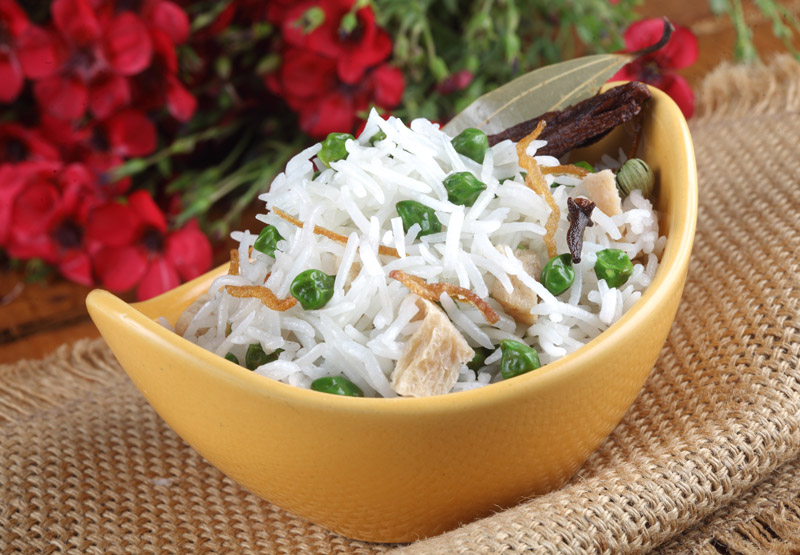

Cholia aur Soyabean Pulao
Ingredients
250 g Basmati Rice100g Cholia
20 nos Soya Bean Chunks
2 tbsp Canola Oil
1 no Onion Large
2 nos Green Chilli Small
1 no Bayleaf
1 no Cinnamon Long
10 nos Black pepper Corn
Salt to taste
250 ml Water
Method Preparation
Pick, wash and soak rice for half hour. Boil water and add salt. Remove from fire and drop in soya bean chunks for 15 mins. Peel the onion and thickly slice it. Heat a heavy bottom and add canola oil. Add bayleaf, zeera, cloves, peppercorn and cinnamon. Once they splutter add onions and green chillies slit, saute them till onion turns light brown. Squeeze out excess water from the soya chunks and along with cholia add to the pan. Add salt and saute for 2 mins. Add salt and rice. Now pour water and let the rice boil. Once half the water is evaporated turn the heat low and cover with a tight fitting lid. Cook for another 8 mins and turn off the heat. Let it rest in this position for another 10 mins. Remove the lid and serve hot.